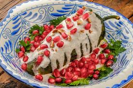

La gastronomía mexicana es una combinacion de tecnicas y habilidades
culinarias con la union y fusión de sabores, colores y texturas que van
de la mano con la combinación de tradiciones, cultura y regiones que
deriva de la cocina de México prehispánico con la comida europeo.
La gastronomia mexicana es la expresion culinaria de Mexico, gracias a
la union de tecnicas y habilidades culinarias de distintas regiones del
pais mexicano con las europeas desde tiempos prehispanicos.

Definicion de Gastronomia en Mexico.
1.- Muchos de estos utensilios son de origen prehispánico, y otros son más modernos. Sea como sea, son toda una tradición.
COMAL
Tradicionalmente de barro, también puedes encontrarlo de hierro. Es un utensilio importante de la cocina mexicana porque en ella se prepAran las tortillas, gorditas o tlacoyos.
CUCHARAS DE MADERA
Por el calor que mantiene el barro, evitan muchos accidentes. Se usan para cualquier tipo de olla porque, además, no rayan los utensilios, aún cuando se remueva con fuerza.
METATE
De la misma piedra que el molcajete, es largo y cuenta con una “mano” cilíndrica y larga. En él se muele el maíz para las tortillas y los ingredientes para preparar el mole.
MOLCAJETE
Es un mortero hecho de piedra volcánica. Junto con la “mano”, una piedra de forma cónica, se muelen los ingredientes asados en el comal hasta obtener la salsa.
MOLINILLO
Es para lograr un chocolate espumado tradicional. Antes se preparaba con dos jícaras; después de la Colonia surgió este utensilio para espu- mar la leche directo en la olla.
PRENSA PARA TORTILLAS
Facilita preparar a mano esta delicia culinaria mexicana. Existen de metal y de madera, siendo las más populares las primeras por su dura- bilidad a través de generaciones.
UTENSILIOS DE BARRO
Ideales para preparar recetas calientes. Las ollas son perfectas para atoles, ponches o café; las cazuelas son ideales para preparar caldos o guisos como el mole.
VAPORERA
Antes se usaba de barro; ahora son de metal. Básica para preparar tamales o elotes; poniendo un poco de agua bajo la rejilla, al llevar al fuego hace que se forme vapor y se cocina.
JICARAS
Es un utensilio fabricado con arcilla o normalmente del fruto llamado jícaro. El jícaro es una fruta grande, redonda y de color verde que se obtiene principalmente de los estados de Tabasco, Campeche, Quintana Roo y Yucatán.
2.- La higiene en la cocina es uno de los aspectos más importantes al momento de realizar alguna preparación. Este tema engloba una serie de cosas que se deben cuidar antes, durante y después de haber cocinado o preparado algún complemento.
3.- Para el chef ejecutivo de Toks, Victor Fabela, la higiene en la cocina es relacionada con los cimientos de un edificio, una correcta limpieza del espacio de trabajo le da seguridad al producto, a los clientes y a los trabajadores del lugar.
4.- El constante lavado de manos y la desinfección de la comida es clave para tener una buena higiene en la cocina. Trabajar en un entorno limpio y ordenado también juega un papel importante al momento de hacer alguna preparación.
5.- Para tener un mejor rendimiento de estos utensilios de cocina mexicana, considera lo siguiente:
1-Limpieza: lávalos con agua y jabón. Evita las fibras metálicas.
2-Cuidado: guarda los instrumentos de barro en lugares fuera del alcance de los niños.
3-Almacenaje: mantén metates y molcajetes en zonas bajas, ya que son pesados y al sacarse pueden
causar un accidente en la cocina.
4-Eficiencia: emplea una bolsa de plástico para preparar las tortillas en la prensa para que sea más práctico su uso.
5-Reemplazo: si notas que se despostillan o se oxidan, es momento de sustituirlos.
Lavado correcto de manos.
La gastronomía mexicana es una combinacion de tecnicas y habilidades
culinarias con la union y fusión de sabores, colores y texturas que van
de la mano con la combinación de tradiciones, cultura y regiones que
deriva de la cocina de México prehispánico con la comida europeo.
La gastronomia mexicana es la expresion culinaria de Mexico, gracias a
la union de tecnicas y habilidades culinarias de distintas regiones del
pais mexicano con las europeas desde tiempos prehispanicos.